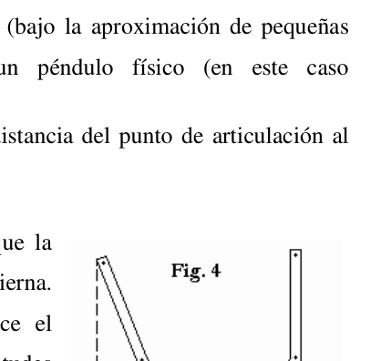

<!DOCTYPE html>
<html lang="es" dir="ltr"><head><title>Argent 2008 Locale — Quesito 57</title><meta charset="utf-8"/><link rel="preconnect" href="https://fonts.googleapis.com"/><link rel="preconnect" href="https://fonts.gstatic.com"/><link rel="stylesheet" href="https://fonts.googleapis.com/css2?family=Fraunces:wght@400;700&amp;family=Figtree:ital,wght@0,400;0,600;1,400;1,600&amp;family=Spline Sans Mono:wght@400;600&amp;display=swap"/><link rel="preconnect" href="https://cdnjs.cloudflare.com" crossorigin="anonymous"/><meta name="viewport" content="width=device-width, initial-scale=1.0"/><meta name="og:site_name" content="Raccolta Gare di Fisica"/><meta property="og:title" content="Argent 2008 Locale — Quesito 57"/><meta property="og:type" content="website"/><meta name="twitter:card" content="summary_large_image"/><meta name="twitter:title" content="Argent 2008 Locale — Quesito 57"/><meta name="twitter:description" content="Motor de Stirling PT52. Ciudad de Buenos Aires. Azul. Motores y energía En 1816 Robert Stirling inventó un motor que hoy lleva su nombre."/><meta property="og:description" content="Motor de Stirling PT52. Ciudad de Buenos Aires. Azul. Motores y energía En 1816 Robert Stirling inventó un motor que hoy lleva su nombre."/><meta property="og:image:alt" content="Motor de Stirling PT52. Ciudad de Buenos Aires. Azul. Motores y energía En 1816 Robert Stirling inventó un motor que hoy lleva su nombre."/><meta property="og:image" content="https://gborghi.github.io/raccolta-gare-fisica/static/og-image.png"/><meta property="og:image:url" content="https://gborghi.github.io/raccolta-gare-fisica/static/og-image.png"/><meta name="twitter:image" content="https://gborghi.github.io/raccolta-gare-fisica/static/og-image.png"/><meta property="og:image:type" content="image/.png"/><meta property="twitter:domain" content="gborghi.github.io/raccolta-gare-fisica"/><meta property="og:url" content="https://gborghi.github.io/raccolta-gare-fisica/prove/cuadernillo_2008__q57"/><meta property="twitter:url" content="https://gborghi.github.io/raccolta-gare-fisica/prove/cuadernillo_2008__q57"/><link rel="icon" href="../static/icon.png"/><meta name="description" content="Motor de Stirling PT52. Ciudad de Buenos Aires. Azul. Motores y energía En 1816 Robert Stirling inventó un motor que hoy lleva su nombre."/><meta name="generator" content="Quartz"/><link href="../index.css" rel="stylesheet" type="text/css" data-persist="true"/><style>.clipboard-button {
  position: absolute;
  display: flex;
  float: right;
  right: 0;
  padding: 0.4rem;
  margin: 0.3rem;
  color: var(--gray);
  border-color: var(--dark);
  background-color: var(--light);
  border: 1px solid;
  border-radius: 5px;
  opacity: 0;
  transition: 0.2s;
}
.clipboard-button > svg {
  fill: var(--light);
  filter: contrast(0.3);
}
.clipboard-button:hover {
  cursor: pointer;
  border-color: var(--secondary);
}
.clipboard-button:focus {
  outline: 0;
}

pre:hover > .clipboard-button {
  opacity: 1;
  transition: 0.2s;
}</style><style>.expand-button {
  position: absolute;
  display: flex;
  float: right;
  padding: 0.4rem;
  margin: 0.3rem;
  right: 0;
  color: var(--gray);
  border-color: var(--dark);
  background-color: var(--light);
  border: 1px solid;
  border-radius: 5px;
  opacity: 0;
  transition: 0.2s;
}
.expand-button > svg {
  fill: var(--light);
  filter: contrast(0.3);
}
.expand-button:hover {
  cursor: pointer;
  border-color: var(--secondary);
}
.expand-button:focus {
  outline: 0;
}

pre:hover > .expand-button {
  opacity: 1;
  transition: 0.2s;
}

#mermaid-container {
  position: fixed;
  contain: layout;
  z-index: 999;
  left: 0;
  top: 0;
  width: 100vw;
  height: 100vh;
  overflow: hidden;
  display: none;
  backdrop-filter: blur(4px);
  background: rgba(0, 0, 0, 0.5);
}
#mermaid-container.active {
  display: inline-block;
}
#mermaid-container > #mermaid-space {
  border: 1px solid var(--lightgray);
  background-color: var(--light);
  border-radius: 5px;
  position: fixed;
  top: 50%;
  left: 50%;
  transform: translate(-50%, -50%);
  height: 80vh;
  width: 80vw;
  overflow: hidden;
}
#mermaid-container > #mermaid-space > .mermaid-content {
  position: relative;
  transform-origin: 0 0;
  transition: transform 0.1s ease;
  overflow: visible;
  min-height: 200px;
  min-width: 200px;
}
#mermaid-container > #mermaid-space > .mermaid-content pre {
  margin: 0;
  border: none;
}
#mermaid-container > #mermaid-space > .mermaid-content svg {
  max-width: none;
  height: auto;
}
#mermaid-container > #mermaid-space > .mermaid-controls {
  position: absolute;
  bottom: 20px;
  right: 20px;
  display: flex;
  gap: 8px;
  padding: 8px;
  background: var(--light);
  border: 1px solid var(--lightgray);
  border-radius: 6px;
  box-shadow: 0 2px 4px rgba(0, 0, 0, 0.1);
  z-index: 2;
}
#mermaid-container > #mermaid-space > .mermaid-controls .mermaid-control-button {
  display: flex;
  align-items: center;
  justify-content: center;
  width: 32px;
  height: 32px;
  padding: 0;
  border: 1px solid var(--lightgray);
  background: var(--light);
  color: var(--dark);
  border-radius: 4px;
  cursor: pointer;
  font-size: 16px;
  font-family: var(--bodyFont);
  transition: all 0.2s ease;
}
#mermaid-container > #mermaid-space > .mermaid-controls .mermaid-control-button:hover {
  background: var(--lightgray);
}
#mermaid-container > #mermaid-space > .mermaid-controls .mermaid-control-button:active {
  transform: translateY(1px);
}
#mermaid-container > #mermaid-space > .mermaid-controls .mermaid-control-button:nth-child(2) {
  width: auto;
  padding: 0 12px;
  font-size: 14px;
}</style><link href="https://cdn.jsdelivr.net/npm/katex@0.16.11/dist/katex.min.css" rel="stylesheet" type="text/css" data-persist="true"/><script src="../prescript.js" type="application/javascript" data-persist="true"></script><script type="application/javascript" data-persist="true">const fetchData = fetch("../static/contentIndex.json").then(data => data.json())</script></head><body data-slug="prove/cuadernillo_2008__q57" data-basepath="/raccolta-gare-fisica"><nav class="navbar"><div class="navbar-inner"><a class="navbar-brand" href="/raccolta-gare-fisica/">Raccolta Gare di Fisica</a><div class="navbar-links"><a href="/raccolta-gare-fisica/clusters/">Aree</a><a href="/raccolta-gare-fisica/topics/">Argomenti</a><a href="/raccolta-gare-fisica/methods/">Metodi</a><a href="/raccolta-gare-fisica/skills/">Abilità</a><a href="/raccolta-gare-fisica/objects/">Objects</a><a href="/raccolta-gare-fisica/prove/">Prove</a><a href="/raccolta-gare-fisica/cerca">Cerca</a></div></div></nav><div id="quartz-root" class="page" data-frame="default"><div id="quartz-body"><div class="left sidebar"><h2 class="page-title"><a href="..">Raccolta Gare di Fisica</a></h2><div class="mobile-only"><div class="spacer"></div></div><div class="flex-component" style="flex-direction: row; flex-wrap: nowrap; gap: 0.5rem;"><div style="flex-grow: 1; flex-shrink: 1; flex-basis: auto; order: 0; align-self: center; justify-self: center;"><div class="search"><button class="search-button" aria-label="Cerca" aria-expanded="false"><svg role="img" xmlns="http://www.w3.org/2000/svg" viewBox="0 0 19.9 19.7"><title>Search</title><g class="search-path" fill="none"><path stroke-linecap="square" d="M18.5 18.3l-5.4-5.4"></path><circle cx="8" cy="8" r="7"></circle></g></svg><p>Cerca</p></button><div class="search-container"><div class="search-space"><input autocomplete="off" class="search-bar" name="search" type="text" aria-label="Cerca qualcosa" placeholder="Cerca qualcosa"/><div class="search-layout" data-preview="true" data-field-priority="[&quot;title&quot;,&quot;content&quot;,&quot;tags&quot;]"></div></div></div></div></div><div style="flex-grow: 0; flex-shrink: 1; flex-basis: auto; order: 0; align-self: center; justify-self: center;"><button class="darkmode" aria-label="Tema scuro"><svg xmlns="http://www.w3.org/2000/svg" xmlns:xlink="http://www.w3.org/1999/xlink" version="1.1" class="dayIcon" x="0px" y="0px" viewBox="0 0 35 35" style="enable-background:new 0 0 35 35" xml:space="preserve" aria-label="Tema scuro"><title>Tema scuro</title><path d="M6,17.5C6,16.672,5.328,16,4.5,16h-3C0.672,16,0,16.672,0,17.5    S0.672,19,1.5,19h3C5.328,19,6,18.328,6,17.5z M7.5,26c-0.414,0-0.789,0.168-1.061,0.439l-2,2C4.168,28.711,4,29.086,4,29.5    C4,30.328,4.671,31,5.5,31c0.414,0,0.789-0.168,1.06-0.44l2-2C8.832,28.289,9,27.914,9,27.5C9,26.672,8.329,26,7.5,26z M17.5,6    C18.329,6,19,5.328,19,4.5v-3C19,0.672,18.329,0,17.5,0S16,0.672,16,1.5v3C16,5.328,16.671,6,17.5,6z M27.5,9    c0.414,0,0.789-0.168,1.06-0.439l2-2C30.832,6.289,31,5.914,31,5.5C31,4.672,30.329,4,29.5,4c-0.414,0-0.789,0.168-1.061,0.44    l-2,2C26.168,6.711,26,7.086,26,7.5C26,8.328,26.671,9,27.5,9z M6.439,8.561C6.711,8.832,7.086,9,7.5,9C8.328,9,9,8.328,9,7.5    c0-0.414-0.168-0.789-0.439-1.061l-2-2C6.289,4.168,5.914,4,5.5,4C4.672,4,4,4.672,4,5.5c0,0.414,0.168,0.789,0.439,1.06    L6.439,8.561z M33.5,16h-3c-0.828,0-1.5,0.672-1.5,1.5s0.672,1.5,1.5,1.5h3c0.828,0,1.5-0.672,1.5-1.5S34.328,16,33.5,16z     M28.561,26.439C28.289,26.168,27.914,26,27.5,26c-0.828,0-1.5,0.672-1.5,1.5c0,0.414,0.168,0.789,0.439,1.06l2,2    C28.711,30.832,29.086,31,29.5,31c0.828,0,1.5-0.672,1.5-1.5c0-0.414-0.168-0.789-0.439-1.061L28.561,26.439z M17.5,29    c-0.829,0-1.5,0.672-1.5,1.5v3c0,0.828,0.671,1.5,1.5,1.5s1.5-0.672,1.5-1.5v-3C19,29.672,18.329,29,17.5,29z M17.5,7    C11.71,7,7,11.71,7,17.5S11.71,28,17.5,28S28,23.29,28,17.5S23.29,7,17.5,7z M17.5,25c-4.136,0-7.5-3.364-7.5-7.5    c0-4.136,3.364-7.5,7.5-7.5c4.136,0,7.5,3.364,7.5,7.5C25,21.636,21.636,25,17.5,25z"></path></svg><svg xmlns="http://www.w3.org/2000/svg" xmlns:xlink="http://www.w3.org/1999/xlink" version="1.1" class="nightIcon" x="0px" y="0px" viewBox="0 0 100 100" style="enable-background:new 0 0 100 100" xml:space="preserve" aria-label="Tema chiaro"><title>Tema chiaro</title><path d="M96.76,66.458c-0.853-0.852-2.15-1.064-3.23-0.534c-6.063,2.991-12.858,4.571-19.655,4.571  C62.022,70.495,50.88,65.88,42.5,57.5C29.043,44.043,25.658,23.536,34.076,6.47c0.532-1.08,0.318-2.379-0.534-3.23  c-0.851-0.852-2.15-1.064-3.23-0.534c-4.918,2.427-9.375,5.619-13.246,9.491c-9.447,9.447-14.65,22.008-14.65,35.369  c0,13.36,5.203,25.921,14.65,35.368s22.008,14.65,35.368,14.65c13.361,0,25.921-5.203,35.369-14.65  c3.872-3.871,7.064-8.328,9.491-13.246C97.826,68.608,97.611,67.309,96.76,66.458z"></path></svg></button></div><div style="flex-grow: 0; flex-shrink: 1; flex-basis: auto; order: 0; align-self: center; justify-self: center;"><button class="readermode" aria-label="Modalità lettura"><svg xmlns="http://www.w3.org/2000/svg" xmlns:xlink="http://www.w3.org/1999/xlink" version="1.1" class="readerIcon" fill="currentColor" stroke="currentColor" stroke-width="0.2" stroke-linecap="round" stroke-linejoin="round" width="64px" height="64px" viewBox="0 0 24 24" aria-label="Modalità lettura"><title>Modalità lettura</title><g transform="translate(-1.8, -1.8) scale(1.15, 1.2)"><path d="M8.9891247,2.5 C10.1384702,2.5 11.2209868,2.96705384 12.0049645,3.76669482 C12.7883914,2.96705384 13.8709081,2.5 15.0202536,2.5 L18.7549359,2.5 C19.1691495,2.5 19.5049359,2.83578644 19.5049359,3.25 L19.5046891,4.004 L21.2546891,4.00457396 C21.6343849,4.00457396 21.9481801,4.28672784 21.9978425,4.6528034 L22.0046891,4.75457396 L22.0046891,20.25 C22.0046891,20.6296958 21.7225353,20.943491 21.3564597,20.9931534 L21.2546891,21 L2.75468914,21 C2.37499337,21 2.06119817,20.7178461 2.01153575,20.3517706 L2.00468914,20.25 L2.00468914,4.75457396 C2.00468914,4.37487819 2.28684302,4.061083 2.65291858,4.01142057 L2.75468914,4.00457396 L4.50368914,4.004 L4.50444233,3.25 C4.50444233,2.87030423 4.78659621,2.55650904 5.15267177,2.50684662 L5.25444233,2.5 L8.9891247,2.5 Z M4.50368914,5.504 L3.50468914,5.504 L3.50468914,19.5 L10.9478955,19.4998273 C10.4513189,18.9207296 9.73864328,18.5588115 8.96709342,18.5065584 L8.77307039,18.5 L5.25444233,18.5 C4.87474657,18.5 4.56095137,18.2178461 4.51128895,17.8517706 L4.50444233,17.75 L4.50368914,5.504 Z M19.5049359,17.75 C19.5049359,18.1642136 19.1691495,18.5 18.7549359,18.5 L15.2363079,18.5 C14.3910149,18.5 13.5994408,18.8724714 13.0614828,19.4998273 L20.5046891,19.5 L20.5046891,5.504 L19.5046891,5.504 L19.5049359,17.75 Z M18.0059359,3.999 L15.0202536,4 L14.8259077,4.00692283 C13.9889509,4.06666544 13.2254227,4.50975805 12.7549359,5.212 L12.7549359,17.777 L12.7782651,17.7601316 C13.4923805,17.2719483 14.3447024,17 15.2363079,17 L18.0059359,16.999 L18.0056891,4.798 L18.0033792,4.75457396 L18.0056891,4.71 L18.0059359,3.999 Z M8.9891247,4 L6.00368914,3.999 L6.00599909,4.75457396 L6.00599909,4.75457396 L6.00368914,4.783 L6.00368914,16.999 L8.77307039,17 C9.57551536,17 10.3461406,17.2202781 11.0128313,17.6202194 L11.2536891,17.776 L11.2536891,5.211 C10.8200889,4.56369974 10.1361548,4.13636104 9.37521067,4.02745763 L9.18347055,4.00692283 L8.9891247,4 Z"></path></g></svg></button></div></div><div class="explorer nav-files-container" data-behavior="link" data-collapsed="collapsed" data-savestate="true" data-data-fns="{&quot;order&quot;:[&quot;filter&quot;,&quot;map&quot;,&quot;sort&quot;],&quot;sortFn&quot;:&quot;(a2, b2) => {\n    if (!a2.isFolder &amp;&amp; !b2.isFolder || a2.isFolder &amp;&amp; b2.isFolder) {\n      return (a2.displayName || \&quot;\&quot;).localeCompare(b2.displayName || \&quot;\&quot;, void 0, {\n        numeric: true,\n        sensitivity: \&quot;base\&quot;\n      });\n    }\n    if (!a2.isFolder &amp;&amp; b2.isFolder) {\n      return 1;\n    }\n    return -1;\n  }&quot;,&quot;filterFn&quot;:&quot;(node) => node.slugSegment !== \&quot;tags\&quot; &amp;&amp; node.slugSegment !== \&quot;Svolgimenti\&quot;&quot;,&quot;mapFn&quot;:&quot;(node) => {\n    return node;\n  }&quot;}"><button type="button" class="explorer-toggle mobile-explorer hide-until-loaded" data-mobile="true" aria-controls="explorer-7639" aria-label="Esplora"><svg xmlns="http://www.w3.org/2000/svg" width="24" height="24" viewBox="0 0 24 24" stroke-width="2" stroke-linecap="round" stroke-linejoin="round" class="lucide-menu"><line x1="4" x2="20" y1="12" y2="12"></line><line x1="4" x2="20" y1="6" y2="6"></line><line x1="4" x2="20" y1="18" y2="18"></line></svg></button><button type="button" class="title-button explorer-toggle desktop-explorer" data-mobile="false" aria-expanded="true"><h2>Esplora</h2><svg xmlns="http://www.w3.org/2000/svg" width="14" height="14" viewBox="5 8 14 8" fill="none" stroke="currentColor" stroke-width="2" stroke-linecap="round" stroke-linejoin="round" class="fold"><polyline points="6 9 12 15 18 9"></polyline></svg></button><div id="explorer-7639" class="explorer-content" aria-expanded="false" role="group"><ul class="explorer-ul overflow" id="list-0"><li class="overflow-end"></li></ul></div><template id="template-file"><li><a href="#" class="nav-file-title tree-item-self"></a></li></template><template id="template-folder"><li><div class="folder-container nav-folder-title tree-item-self"><svg xmlns="http://www.w3.org/2000/svg" width="12" height="12" viewBox="5 8 14 8" fill="none" stroke="currentColor" stroke-width="2" stroke-linecap="round" stroke-linejoin="round" class="folder-icon nav-folder-collapse-indicator collapse-icon"><polyline points="6 9 12 15 18 9"></polyline></svg><div><button class="folder-button"><span class="folder-title"></span></button></div></div><div class="folder-outer"><ul class="content tree-item-children"></ul></div></li></template></div></div><div class="center"><div class="page-header"><div class="popover-hint"><nav class="breadcrumb-container" aria-label="breadcrumbs"><div class="breadcrumb-element"><a href="../">Home</a><p> ❯ </p></div><div class="breadcrumb-element"><a href="../prove/">prove</a><p> ❯ </p></div><div class="breadcrumb-element"><a href>Argent 2008 Locale — Quesito 57</a></div></nav><h1 class="article-title">Argent 2008 Locale — Quesito 57</h1><details class="note-properties metadata-container" open data-collapsed="false"><summary class="note-properties-header"><span class="note-properties-title">Properties</span><span class="note-properties-count">1</span></summary><table class="note-properties-table"><tbody><tr class="note-properties-row metadata-property"><td class="note-properties-key metadata-property-key">tags</td><td class="note-properties-value metadata-property-value"><span class="note-properties-tags"><a href="../tags/kg/prova" class="internal internal-link tag-link">kg/prova</a><span class="note-properties-separator">, </span><a href="../tags/paese/argentina" class="internal internal-link tag-link">paese/argentina</a><span class="note-properties-separator">, </span><a href="../tags/comp/argent" class="internal internal-link tag-link">comp/argent</a><span class="note-properties-separator">, </span><a href="../tags/cluster/termodinamica" class="internal internal-link tag-link">cluster/termodinamica</a><span class="note-properties-separator">, </span><a href="../tags/topic/thermodynamics" class="internal internal-link tag-link">topic/thermodynamics</a><span class="note-properties-separator">, </span><a href="../tags/argomento/termodinamica" class="internal internal-link tag-link">argomento/termodinamica</a><span class="note-properties-separator">, </span><a href="../tags/difficolta/5" class="internal internal-link tag-link">difficolta/5</a><span class="note-properties-separator">, </span><a href="../tags/multidisciplina/multi" class="internal internal-link tag-link">multidisciplina/multi</a><span class="note-properties-separator">, </span><a href="../tags/object/gas" class="internal internal-link tag-link">object/gas</a><span class="note-properties-separator">, </span><a href="../tags/object/heat-engine" class="internal internal-link tag-link">object/heat-engine</a><span class="note-properties-separator">, </span><a href="../tags/object/piston" class="internal internal-link tag-link">object/piston</a><span class="note-properties-separator">, </span><a href="../tags/object/mirror" class="internal internal-link tag-link">object/mirror</a></span></td></tr></tbody></table></details><p show-comma="true" class="content-meta"><time datetime="2026-07-02T05:27:57.876Z">02 lug 2026</time><span>18 minuti</span></p><ul class="tags"><li><a href="../tags/kg/prova" class="internal tag-link">kg/prova</a></li><li><a href="../tags/paese/argentina" class="internal tag-link">paese/argentina</a></li><li><a href="../tags/comp/argent" class="internal tag-link">comp/argent</a></li><li><a href="../tags/cluster/termodinamica" class="internal tag-link">cluster/termodinamica</a></li><li><a href="../tags/topic/thermodynamics" class="internal tag-link">topic/thermodynamics</a></li><li><a href="../tags/argomento/termodinamica" class="internal tag-link">argomento/termodinamica</a></li><li><a href="../tags/difficolta/5" class="internal tag-link">difficolta/5</a></li><li><a href="../tags/multidisciplina/multi" class="internal tag-link">multidisciplina/multi</a></li><li><a href="../tags/object/gas" class="internal tag-link">object/gas</a></li><li><a href="../tags/object/heat-engine" class="internal tag-link">object/heat-engine</a></li><li><a href="../tags/object/piston" class="internal tag-link">object/piston</a></li><li><a href="../tags/object/mirror" class="internal tag-link">object/mirror</a></li></ul></div></div><article class="popover-hint"><div class="markdown-preview-view markdown-rendered"><div class="qlang-switch" data-default="es"></div>
<p><strong>Motor de Stirling</strong></p>
<p>PT52. Ciudad de Buenos Aires. Azul.
Motores y energía
En 1816 Robert Stirling inventó un motor que hoy lleva su nombre. Este motor resultaba mucho más
seguro que la máquina de vapor debido a que las presiones involucradas en el proceso son mucho
menores que en esta última (era frecuente que las calderas de las máquinas de vapor estallaran lo cual
las convertía en altamente peligrosas). El funcionamiento de este motor se basa en el siguiente ciclo
(hoy conocido como ciclo de Stirling) que efectúa un gas en un proceso en el que se lo pone en
contacto con dos fuentes térmicas una a temperatura T1 y otra a temperatura T2,
2
1
T
T &lt;
una a mayor
temperatura que la otra:
El gas que inicialmente se halla en la cámara de uno de los pistones (que se encuentra en contacto con
la fuente a T1) se calienta a volumen constante (V1) al pasar a la cámara del otro pistón la cual se halla
en contacto con la fuente térmica de mayor temperatura (T2), el gas se expande isotérmicamente
empujando el pistón hasta alcanzar un volumen V2, el movimiento de los pistones hace que el gas
vuelva a introducirse en la cámara del pistón en la que se hallaba en un principio cediendo calor a
volumen constante hasta alcanzar nuevamente la temperatura T1 y finalmente el gas se comprime
isotérmicamente dentro de dicho pistón para luego recomenzar el ciclo.</p>
<ol>
<li>Represente el ciclo que realiza el gas en un diagrama p vs. V. Calcule en términos de constantes
propias de los gases ideales (R, cv y cp), T1, T2, V1, V2 y n (el número de moles de gas), el calor que
absorbe el gas de la fuente a temperatura T2 y el trabajo que realiza el gas sobre los pistones en cada
repetición del ciclo.
Una de las ventajas que tiene el motor de Stirling, además de ser extremadamente silencioso (una de
las razones por las cuales se lo emplea en submarinos), es que funciona utilizando una fuente de calor
externa y que por lo tanto esta fuente de energía puede ser de cualquier naturaleza: ya sea la
combustión de algún dado combustible, calor producido por reacciones nucleares o energía solar.
Justamente en la actualidad se investiga la posibilidad de implementar, en zonas apartadas con altos
índices de heliofanía como por ejemplo la región del N.O.A., motores de Stirling que utilicen la
energía solar colectada por un espejo parabólico para, ubicando el cilindro de uno de los pistones en el
foco del espejo, elevar su temperatura (T2) por sobre la temperatura ambiente (T1).
Se coloca un dispositivo de éstos en el noroeste de nuestro país con
las siguientes características: el cilindro del pistón que se halla en el
foco posee un diámetro externo (de) de 8cm, un diámetro interno (di)
de 6cm, una altura de la pared exterior (he) de 20cm y de la pared
interior (hi) de 15cm (ver Fig.1). Además posee un recubrimiento
sobre la superficie exterior que disminuye su reflectividad para la
radiación del espectro solar a un 4% y una emisividad de 0,8.</li>
<li>Teniendo en cuenta la ley de Stefan-Boltzmann que plantea
que la potencia de la radiación térmica emitida por un cuerpo por</li>
</ol>
<ul>
<li>59 -
unidad de superficie (Pe) está relacionada con su temperatura absoluta de acuerdo con:
4
T
Pe
εσ
=
,
donde ε  es la emisividad del material y
4
2
8
10
.
67
,5
K
m
W
−
=
σ
es la constante de Stefan-Boltzmann,
que el espejo tiene un diámetro (D) de 1m y que en un día despejado inciden aproximadamente
2
3
10 m
W  de radiación solar sobre un área orientada perpendicularmente a la radiación al nivel de la
superficie terrestre en dichas latitudes.
¿Cuál sería la temperatura T2 a la que se hallaría el cilindro del pistón que se encuentra en el foco del
espejo bajo estas condiciones? Considere las siguientes aproximaciones:
 La temperatura del cilindro es homogénea.
 No considere la radiación emitida por el medio circundante
 La radiación proveniente de las paredes de la cavidad del cilindro (superficie interna) es reabsorbida
por el mismo en su totalidad.
 La energía cedida por el cilindro al gas que realiza el ciclo de Stirling es despreciable frente a la que
se irradia.
 El espejo parabólico es un espejo perfecto y se halla orientado perpendicularmente a la radiación
solar.
 El sistema se halla en un régimen estacionario</li>
</ul>
<ol start="3">
<li>Para este valor de T2, una temperatura ambiente (T1) de 300K, y volúmenes V1 y V2 iguales a un
20% y un 90% respectivamente del volumen total de la cavidad interior del cilindro de la figura 1 y
una cantidad de gas tal que: cuando el volumen que ocupa es igual a dos terceras partes del de la
cavidad interior del cilindro y su temperatura es la temperatura ambiente se encuentra a una presión de
1atm, halle usando lo obtenido en 1) el trabajo que realiza el gas en cada ciclo.
Este motor de Stirling se utiliza para accionar una bomba hidráulica que funciona por rotación para
bombear agua desde una laguna para alimentar un sistema de riego por goteo. Por cada ciclo que
realiza el motor de Stirling el eje de la bomba gira un ángulo de π
2
. La superficie de la laguna se
encuentra 1m por debajo del nivel del punto desde el que nacen las ramificaciones del sistema de riego
y la bomba, en cada ciclo logra extraer 500cm3 de agua de la laguna. El momento de inercia de la parte
móvil de la bomba respecto de su eje es de
2
.
5,0
m
kg
I =
.</li>
<li>El rozamiento en las distintas partes móviles del sistema se puede expresar como un momento
promedio neto de la fuerza de rozamiento respecto del eje de la bomba cuya dependencia con la
velocidad angular de rotación de la bomba es:
Λ</li>
</ol>
<ul>
<li></li>
</ul>
<h1 id="γ">Γ<a role="anchor" aria-hidden="true" tabindex="-1" data-no-popover="true" href="#γ" class="internal internal-link"><svg width="18" height="18" viewBox="0 0 24 24" fill="none" stroke="currentColor" stroke-width="2" stroke-linecap="round" stroke-linejoin="round"><path d="M10 13a5 5 0 0 0 7.54.54l3-3a5 5 0 0 0-7.07-7.07l-1.72 1.71"></path><path d="M14 11a5 5 0 0 0-7.54-.54l-3 3a5 5 0 0 0 7.07 7.07l1.71-1.71"></path></svg></a></h1>
<p>ω
.
fr
Mr
. Para determinar el valor de los
coeficientes Γ  y Λ se hace funcionar la bomba sin sumergir el extremo de la manguera de extracción
en la laguna y se mide la velocidad angular de rotación de la bomba en función del tiempo a partir del
momento en que arranca obteniéndose el siguiente gráfico:</p>
<ul>
<li>60 -
0
1
2
3
4
5
6
7
8
0
2
4
6
8
1 0
1 2
1 4
1 6
1 8
2 0
ω  ( 1 / s )
tie m p o  ( s )</li>
</ul>
<p>Fig.2: velocidad angular de la bomba en función del tiempo.
Estime el valor de los coeficientes Γ  y Λ  sabiendo que las condiciones de temperatura ambiente,
potencia de la radiación solar, etc. son las mismas que se consideraron en los puntos anteriores.
Ayuda: tenga en cuenta que para valores chicos de velocidad angular
Λ
≈
fr
Mr
.
5) Si ahora el extremo de la manguera de extracción se sumerge en el agua de la laguna, calcule
cuál será el volumen de agua que se extraerá por hora una vez que la bomba entró en régimen.</p>

<p></p>

<p><strong>Topic:</strong> <a href="../topics/thermodynamics" class="internal internal-link" data-slug="topics/thermodynamics">Thermodynamics</a>, <a href="../topics/rotational-dynamics" class="internal internal-link alias" data-slug="topics/rotational-dynamics">Rotational Dynamics</a>
<strong>Metodi:</strong> <a href="../methods/thermodynamic-cycle-analysis-(metodo)" class="internal internal-link alias" data-slug="methods/thermodynamic-cycle-analysis-(metodo)">Thermodynamic Cycle Analysis</a>, <a href="../methods/ideal-gas-law-(metodo)" class="internal internal-link alias" data-slug="methods/ideal-gas-law-(metodo)">Ideal Gas Law</a>, <a href="../methods/curve-fitting-(metodo)" class="internal internal-link alias" data-slug="methods/curve-fitting-(metodo)">Curve Fitting</a>
<strong>Competenze:</strong> <a href="../skills/physical-reasoning-(competenza)" class="internal internal-link alias" data-slug="skills/physical-reasoning-(competenza)">Physical Reasoning</a>, <a href="../skills/mathematical-modeling-(competenza)" class="internal internal-link alias" data-slug="skills/mathematical-modeling-(competenza)">Mathematical Modeling</a>, <a href="../skills/experimental-data-analysis-(competenza)" class="internal internal-link alias" data-slug="skills/experimental-data-analysis-(competenza)">Experimental Data Analysis</a>
<strong>Objects:</strong> <a href="../objects/gas-(object)" class="internal internal-link alias" data-slug="objects/gas-(object)">Gas</a>, <a href="../objects/heat-engine-(object)" class="internal internal-link alias" data-slug="objects/heat-engine-(object)">Heat Engine</a>, <a href="../objects/piston-(object)" class="internal internal-link alias" data-slug="objects/piston-(object)">Piston</a>, <a href="../objects/mirror-(object)" class="internal internal-link alias" data-slug="objects/mirror-(object)">Mirror</a>
<strong>Fonte:</strong> <a href="https://drive.google.com/file/d/1C3e_kV2nxea7l_iZUAXvFoaDSCaA7fun/view" class="external external-link">Testo (PDF) — p.3<svg aria-hidden="true" class="external-icon" style="max-width:0.8em;max-height:0.8em;" viewBox="0 0 512 512"><path d="M320 0H288V64h32 82.7L201.4 265.4 178.7 288 224 333.3l22.6-22.6L448 109.3V192v32h64V192 32 0H480 320zM32 32H0V64 480v32H32 456h32V480 352 320H424v32 96H64V96h96 32V32H160 32z"></path></svg></a></p>
<div class="qlang-split" data-lang="it"></div>
<p><strong>Motore di Stirling</strong></p>
<p>PT52. Città di Buenos Aires. Blu.
Motori e energia
Nel 1816 Robert Stirling inventò un motore che oggi porta il suo nome. Questo motore era molto più efficace.
Sicuro che la macchina a vapore a causa delle pressioni coinvolte nel processo sono molto
Le caldaie delle macchine a vapore sono spesso scoppiate, il che è stato
che li rendevano altamente pericolosi). Il funzionamento di questo motore si basa sul ciclo successivo
(oggi noto come ciclo di Stirling) che effettua un gas in un processo in cui viene messo in
contatto con due fonti termiche, una a temperatura T1 e un’altra a temperatura T2,
2
1
T
T &lt;
una a maggiore
temperatura che l’altra:
Il gas che si trova inizialmente nella camera di uno dei pistoni (che si trova in contatto con
la fonte a T1) si riscalda a volume costante (V1) passando alla camera dell’altro pistone che si trova
In contatto con la fonte termica di più alta temperatura (T2), il gas si espandono isotermicamente
Spingendo il pistone fino a raggiungere un volume di V2, il movimento dei pistoni fa sì che il gas
si rientra nella camera del pistone in cui si trovava inizialmente, rilasciando calore a
volume costante fino a raggiungere di nuovo la temperatura T1 e alla fine il gas viene compresso
Isotermicamente all’interno di tale pistone per ricominciare il ciclo.</p>
<ol>
<li>Rappresenta il ciclo che il gas svolge in un diagramma p vs. V. Calcola in termini di costanti
La temperatura di un gas idrografico (R, cv e cp), T1, T2, V1, V2 e n (numero di molli di gas),
Assorbe il gas della sorgente a temperatura T2 e il lavoro che il gas fa sui pistoni in ogni
la ripetizione del ciclo.
Uno dei vantaggi del motore di Stirling, oltre ad essere estremamente silenzioso (uno di
il motivo per cui viene utilizzato in sottomarini), è che funziona utilizzando una fonte di calore.
La fonte di energia può essere di qualsiasi natura:
la combustione di un determinato combustibile, il calore prodotto da reazioni nucleari o da energia solare.
Proprio oggi si sta studiando la possibilità di implementare, in zone remote con altissime
In questo modo, la Commissione ha adottato una serie di misure per la riduzione dei rischi di malattia.
energia solare raccolta da uno specchio parabolico per, posizionando il cilindro di uno dei pistoni nel
foco dello specchio, elevare la temperatura (T2) al di sopra della temperatura ambiente (T1).
Un dispositivo di questo tipo viene installato nel nord-ovest del nostro paese con
le caratteristiche seguenti: il cilindro del pistone che si trova nel
il foco ha un diametro esterno (de) di 8 cm, un diametro interno (di)
di 6 cm, una altezza del muro esterno (he) di 20 cm e del muro
(i) interno di 15 cm (vedi Figura 1). Inoltre, ha un rivestimento.
sulla superficie esterna che riduce la sua riflettività per la
radiare lo spettro solare a un 4% e un’emissività di 0,8.</li>
<li>Considerando la legge di Stefan-Boltzmann che
che la potenza della radiazione termica emessa da un corpo per</li>
</ol>
<ul>
<li>59 -
unità di superficie (Pe) è correlata alla sua temperatura assoluta in base a:
4
T
Pe
εσ
=
,
dove ε è l’emissività del materiale e
4
2
8
10
.
67
,5
K
m
W
−
=
σ
è la costante di Stefan-Boltzmann,
che lo specchio ha un diametro (D) di 1 m e che in un giorno chiaro incidono circa
2
3
10 m
W di radiazione solare su un’area orientata perpendicularmente alla radiazione al livello di
la superficie terrestre in queste latitudini.
Qual è la temperatura T2 al quale si trova il cilindro del pistone che si trova al foco del
specchio in queste condizioni? Considerate i seguenti approcci:
La temperatura del cilindro è omogenea.
Non si considera la radiazione emessa dal medio circostante.
La radiazione proveniente dai muri della cavità del cilindro (superficie interna) viene riassorbita.
per la stessa cosa nel suo complesso.
L’energia ceduta dal cilindro al gas che compie il ciclo di Stirling è scarsa rispetto a quella che</li>
<li>Si irradia.
Lo specchio parabolico è uno specchio perfetto e si trova orientato perpendicularmente alla radiazione.</li>
<li>Il sole.
Il sistema è in regime stazionario</li>
</ul>
<ol start="3">
<li>Per questo valore di T2, una temperatura ambiente (T1) di 300K e volumi V1 e V2 uguali a un
Il volume totale della cavità interna del cilindro di figura 1 e figura 1 è rispettivamente del 20% e del 90%
una quantità di gas tale che: quando il volume che occupa è pari a due terzi di quello di
La temperatura del cilindro è di circa
1atm, si trova usando il risultato di 1) il lavoro che il gas fa in ogni ciclo.
Questo motore di Stirling è usato per alimentare una pompa idraulica che funziona in rotazione per
pompare acqua da un lago per alimentare un sistema di irrigazione a goccia. Per ogni ciclo che
esegue il motore di Stirling l’asse della pompa ruota un angolo di π
2
. La superficie del lago si è
si trova 1 m sotto il livello del punto da cui nascono le ramificazioni del sistema di irrigazione
e la bomba, in ogni ciclo riesce a estrarre 500 cm3 di acqua dal lago. Il momento di inerzia della parte
la bomba mobile rispetto al suo asse è di
2
.
5,0
m
kg
I =
.</li>
<li>Il rottura nelle diverse parti mobili del sistema può essere espresso come un momento
media netta della forza di rottura rispetto all’asse della pompa la cui dipendenza da
la velocità angolare di rotazione della pompa è:
Λ</li>
</ol>
<ul>
<li></li>
</ul>
<h1 id="γ-1">Γ<a role="anchor" aria-hidden="true" tabindex="-1" data-no-popover="true" href="#γ-1" class="internal internal-link"><svg width="18" height="18" viewBox="0 0 24 24" fill="none" stroke="currentColor" stroke-width="2" stroke-linecap="round" stroke-linejoin="round"><path d="M10 13a5 5 0 0 0 7.54.54l3-3a5 5 0 0 0-7.07-7.07l-1.72 1.71"></path><path d="M14 11a5 5 0 0 0-7.54-.54l-3 3a5 5 0 0 0 7.07 7.07l1.71-1.71"></path></svg></a></h1>
<p>ω
.
fr
Mr
. Per determinare il valore dei
Coefficienti Γ e Λ si attiva la pompa senza immergere l’estremità del tubo di estrazione
La velocità angolare di rotazione della pompa è misurata in funzione del tempo a partire dal
Il momento in cui si avvia si ottiene il seguente grafico:</p>
<ul>
<li>60 -
0
1
2
3
4
5
6
7
8
0
2
4
6
8
1 0
1 2
1 4
1 6
1 8
2 0
ω  ( 1 / s )
T e m p o (s)</li>
</ul>
<p>Fig.2: velocità angolare della pompa in funzione del tempo.
Calcolare il valore dei coefficienti Γ e Λ sapendo che le condizioni di temperatura ambiente,
Potenza della radiazione solare, ecc. sono le stesse che sono state considerate nei punti precedenti.
Aiuto: si noti che per i valori piccoli di velocità angolare
Λ
≈
fr
Mr
.
5) Se ora l’estremità del tubo di estrazione si immerge nell’acqua del lago, calcolare
quale sarà il volume di acqua che sarà estratto per ora una volta che la bomba è stata messa in funzione.</p>

<p></p>

<p><strong>Topic:</strong> <a href="../topics/thermodynamics" class="internal internal-link" data-slug="topics/thermodynamics">Thermodynamics</a>, <a href="../topics/rotational-dynamics" class="internal internal-link alias" data-slug="topics/rotational-dynamics">Rotational Dynamics</a>
<strong>Metodi:</strong> <a href="../methods/thermodynamic-cycle-analysis-(metodo)" class="internal internal-link alias" data-slug="methods/thermodynamic-cycle-analysis-(metodo)">Thermodynamic Cycle Analysis</a>, <a href="../methods/ideal-gas-law-(metodo)" class="internal internal-link alias" data-slug="methods/ideal-gas-law-(metodo)">Ideal Gas Law</a>, <a href="../methods/curve-fitting-(metodo)" class="internal internal-link alias" data-slug="methods/curve-fitting-(metodo)">Curve Fitting</a>
<strong>Competenze:</strong> <a href="../skills/physical-reasoning-(competenza)" class="internal internal-link alias" data-slug="skills/physical-reasoning-(competenza)">Physical Reasoning</a>, <a href="../skills/mathematical-modeling-(competenza)" class="internal internal-link alias" data-slug="skills/mathematical-modeling-(competenza)">Mathematical Modeling</a>, <a href="../skills/experimental-data-analysis-(competenza)" class="internal internal-link alias" data-slug="skills/experimental-data-analysis-(competenza)">Experimental Data Analysis</a>
<strong>Objects:</strong> <a href="../objects/gas-(object)" class="internal internal-link alias" data-slug="objects/gas-(object)">Gas</a>, <a href="../objects/heat-engine-(object)" class="internal internal-link alias" data-slug="objects/heat-engine-(object)">Heat Engine</a>, <a href="../objects/piston-(object)" class="internal internal-link alias" data-slug="objects/piston-(object)">Piston</a>, <a href="../objects/mirror-(object)" class="internal internal-link alias" data-slug="objects/mirror-(object)">Mirror</a>
<strong>Fonte:</strong> <a href="https://drive.google.com/file/d/1C3e_kV2nxea7l_iZUAXvFoaDSCaA7fun/view" class="external external-link">Testo (PDF) — p.3<svg aria-hidden="true" class="external-icon" style="max-width:0.8em;max-height:0.8em;" viewBox="0 0 512 512"><path d="M320 0H288V64h32 82.7L201.4 265.4 178.7 288 224 333.3l22.6-22.6L448 109.3V192v32h64V192 32 0H480 320zM32 32H0V64 480v32H32 456h32V480 352 320H424v32 96H64V96h96 32V32H160 32z"></path></svg></a></p>
<div class="qlang-split" data-lang="en"></div>
<p>The engine shall be capable of operating at least one engine.</p>
<p>PT52. City of Buenos Aires. Blue, please.
Engines and power
In 1816 Robert Stirling invented a motor that bears his name today. This engine was much more .
I’m sure the steam engine because the pressures involved in the process are a lot.
The first is that the boilers of the steam engines often exploded, which was a very common problem.
I made them very dangerous. The operation of this engine is based on the following cycle
(now known as the Stirling cycle) which makes a gas in a process in which it is put into
contact with two heat sources, one at T1 and one at T2,
2
1
T
T &lt;
One to the greater .
temperature than the other:
The gas initially found in the chamber of one of the pistons (which is in contact with
The T1 source is heated at a constant volume (V1) when it passes to the chamber of the other piston which is located
In contact with the higher temperature heat source (T2), the gas expands isothermically
Pushing the piston to a V2 volume, the movement of the piston causes the gas to
It re-entered the piston chamber where it was originally located, giving heat to the piston.
The volume is constant until the temperature reaches T1 again and finally the gas is compressed.
isothermically inside that piston and then start the cycle again.</p>
<ol>
<li>Represents the cycle the gas performs in a p vs. V. Calculate in terms of constants
The heat used is the same as the ideal gas (R, cv and cp), T1, T2, V1, V2 and n (number of gas moles).
absorbs the gas from the source at T2 temperature and the work the gas does on the pistons at each
The cycle repeats.
One of the advantages of the Stirling engine, besides being extremely quiet (one of the most
The reason it’s used in submarines is that it works using a heat source.
The energy source can be of any nature:
The energy consumption of the fuel is the result of the combustion of a given fuel, the heat produced by nuclear reactions or solar energy.
The Commission is currently investigating the possibility of implementing the new
The most commonly used methods are the helio-opening of the helio-opening of the
Solar energy collected by a parabolic mirror for, placing the cylinder of one of the pistons in the
The mirror focus, raise its temperature (T2) above the ambient temperature (T1).
A device of this kind is placed in the northwest of our country with
the following characteristics: the cylinder of the piston located on the
The focal length shall be 8 cm, the external diameter (de) and the internal diameter (di)
6 cm, a height of 20 cm from the outer wall and the wall
The following table shows the results of the calculation of the total value of the input: It also has a coating.
The surface of the water is less reflective than the surface of the water.
radiation from the solar spectrum at 4% and an emissivity of 0.8.</li>
<li>Taking into account the Stefan-Boltzmann law which poses
The energy of the thermal radiation emitted by a body per</li>
</ol>
<ul>
<li>59 -
surface unit (Pe) is related to its absolute temperature according to:
4
T
Pe
εσ
=
,
where ε is the material emissivity and
4
2
8
10
.
67
,5
K
m
W
−
=
σ
is the Stefan-Boltzmann constant,
The mirror has a diameter (D) of 1 m and on a clear day they affect approximately
2
3
10 m
W of solar radiation over an area oriented perpendicular to the radiation at the level of the
the surface of the earth at these latitudes.
What would be the temperature T2 at which the cylinder of the piston located at the focus of the piston would be located?
mirror under these conditions? Consider the following approaches:
The temperature of the cylinder is homogeneous.
Do not consider radiation emitted by the surrounding environment.
Radiation from the walls of the cylinder cavity (inner surface) is reabsorbed.
by the same in its entirety.
The energy given by the cylinder to the gas that carries out the Stirling cycle is negligible compared to the energy given by the cylinder to the gas that carries out the Stirling cycle.
It’s radiating.
The parabolic mirror is a perfect mirror and is oriented perpendicular to the radiation.
The sun.
The system is in a stationary mode</li>
</ul>
<ol start="3">
<li>For this value of T2, a room temperature (T1) of 300K, and V1 and V2 volumes equal to one
20% and 90% of the total volume of the inner cylinder cavity of Figure 1 and  respectively
a gas quantity such that: when the volume occupied is equal to two thirds of the volume of the
The inside cavity of the cylinder and its temperature is the ambient temperature is at a pressure of
1atm, find using the result of 1) the work the gas does in each cycle.
This Stirling engine is used to power a rotary hydraulic pump to
pump water from a lagoon to power a drip irrigation system. For each cycle that
The pump axis rotates at an angle of π
2
. The surface of the lagoon is
It is 1 m below the level of the point from which the branches of the irrigation system are born
And the pump, in each cycle, pulls 500 cubic centimeters of water out of the lagoon. The moment of inertia of the part
The pump ‘s mobile relative to its axis is of
2
.
5,0
m
kg
I =
.</li>
<li>The friction in the different moving parts of the system can be expressed as a moment
net mean of the friction force relative to the axis of the pump whose dependence on the
The angular rotation speed of the pump is:
Λ</li>
</ol>
<ul>
<li></li>
</ul>
<h1 id="γ-2">Γ<a role="anchor" aria-hidden="true" tabindex="-1" data-no-popover="true" href="#γ-2" class="internal internal-link"><svg width="18" height="18" viewBox="0 0 24 24" fill="none" stroke="currentColor" stroke-width="2" stroke-linecap="round" stroke-linejoin="round"><path d="M10 13a5 5 0 0 0 7.54.54l3-3a5 5 0 0 0-7.07-7.07l-1.72 1.71"></path><path d="M14 11a5 5 0 0 0-7.54-.54l-3 3a5 5 0 0 0 7.07 7.07l1.71-1.71"></path></svg></a></h1>
<p>ω
.
fr
Mr
. To determine the value of the
The pump is operated without submerging the extreme of the extraction hose
The pump rotation angle is measured as the time from the
The time it starts is the following graph:</p>
<ul>
<li>60 -
0
1
2
3
4
5
6
7
8
0
2
4
6
8
1 0
1 2
1 4
1 6
1 8
2 0
ω  ( 1 / s )
The following is the list of the countries of the European Union:</li>
</ul>
<p>Fig.2: angular velocity of the pump depending on the time.
Estimate the value of the coefficients Γ and Λ knowing that the ambient temperature conditions,
the power of solar radiation, etc. The Commission has not yet decided on the basis of the above.
Help: note that for small angular velocity values
Λ
≈
fr
Mr
.
5) If the end of the extraction hose is now submerged in the water of the lagoon, calculate
the volume of water to be extracted per hour once the pump has been in operation.</p>

<p></p>

<p><strong>Topic:</strong> <a href="../topics/thermodynamics" class="internal internal-link" data-slug="topics/thermodynamics">Thermodynamics</a>, <a href="../topics/rotational-dynamics" class="internal internal-link alias" data-slug="topics/rotational-dynamics">Rotational Dynamics</a>
<strong>Metodi:</strong> <a href="../methods/thermodynamic-cycle-analysis-(metodo)" class="internal internal-link alias" data-slug="methods/thermodynamic-cycle-analysis-(metodo)">Thermodynamic Cycle Analysis</a>, <a href="../methods/ideal-gas-law-(metodo)" class="internal internal-link alias" data-slug="methods/ideal-gas-law-(metodo)">Ideal Gas Law</a>, <a href="../methods/curve-fitting-(metodo)" class="internal internal-link alias" data-slug="methods/curve-fitting-(metodo)">Curve Fitting</a>
<strong>Competenze:</strong> <a href="../skills/physical-reasoning-(competenza)" class="internal internal-link alias" data-slug="skills/physical-reasoning-(competenza)">Physical Reasoning</a>, <a href="../skills/mathematical-modeling-(competenza)" class="internal internal-link alias" data-slug="skills/mathematical-modeling-(competenza)">Mathematical Modeling</a>, <a href="../skills/experimental-data-analysis-(competenza)" class="internal internal-link alias" data-slug="skills/experimental-data-analysis-(competenza)">Experimental Data Analysis</a>
<strong>Objects:</strong> <a href="../objects/gas-(object)" class="internal internal-link alias" data-slug="objects/gas-(object)">Gas</a>, <a href="../objects/heat-engine-(object)" class="internal internal-link alias" data-slug="objects/heat-engine-(object)">Heat Engine</a>, <a href="../objects/piston-(object)" class="internal internal-link alias" data-slug="objects/piston-(object)">Piston</a>, <a href="../objects/mirror-(object)" class="internal internal-link alias" data-slug="objects/mirror-(object)">Mirror</a>
<strong>Fonte:</strong> <a href="https://drive.google.com/file/d/1C3e_kV2nxea7l_iZUAXvFoaDSCaA7fun/view" class="external external-link">Testo (PDF) — p.3<svg aria-hidden="true" class="external-icon" style="max-width:0.8em;max-height:0.8em;" viewBox="0 0 512 512"><path d="M320 0H288V64h32 82.7L201.4 265.4 178.7 288 224 333.3l22.6-22.6L448 109.3V192v32h64V192 32 0H480 320zM32 32H0V64 480v32H32 456h32V480 352 320H424v32 96H64V96h96 32V32H160 32z"></path></svg></a></p></div></article><hr/><div class="page-footer"></div></div><div class="right sidebar"><div class="graph"><h3>Vista grafico</h3><div class="graph-outer"><div class="graph-container" data-cfg="{&quot;drag&quot;:true,&quot;zoom&quot;:true,&quot;depth&quot;:1,&quot;scale&quot;:1.1,&quot;repelForce&quot;:0.5,&quot;centerForce&quot;:0.3,&quot;linkDistance&quot;:30,&quot;fontSize&quot;:0.6,&quot;opacityScale&quot;:1,&quot;showTags&quot;:true,&quot;removeTags&quot;:[],&quot;focusOnHover&quot;:false,&quot;enableRadial&quot;:false,&quot;maxNodes&quot;:220}"></div><button class="global-graph-icon" aria-label="Global Graph"><svg version="1.1" xmlns="http://www.w3.org/2000/svg" xmlns:xlink="http://www.w3.org/1999/xlink" x="0px" y="0px" viewBox="0 0 55 55" fill="currentColor" xml:space="preserve"><path d="M49,0c-3.309,0-6,2.691-6,6c0,1.035,0.263,2.009,0.726,2.86l-9.829,9.829C32.542,17.634,30.846,17,29,17
                s-3.542,0.634-4.898,1.688l-7.669-7.669C16.785,10.424,17,9.74,17,9c0-2.206-1.794-4-4-4S9,6.794,9,9s1.794,4,4,4
                c0.74,0,1.424-0.215,2.019-0.567l7.669,7.669C21.634,21.458,21,23.154,21,25s0.634,3.542,1.688,4.897L10.024,42.562
                C8.958,41.595,7.549,41,6,41c-3.309,0-6,2.691-6,6s2.691,6,6,6s6-2.691,6-6c0-1.035-0.263-2.009-0.726-2.86l12.829-12.829
                c1.106,0.86,2.44,1.436,3.898,1.619v10.16c-2.833,0.478-5,2.942-5,5.91c0,3.309,2.691,6,6,6s6-2.691,6-6c0-2.967-2.167-5.431-5-5.91
                v-10.16c1.458-0.183,2.792-0.759,3.898-1.619l7.669,7.669C41.215,39.576,41,40.26,41,41c0,2.206,1.794,4,4,4s4-1.794,4-4
                s-1.794-4-4-4c-0.74,0-1.424,0.215-2.019,0.567l-7.669-7.669C36.366,28.542,37,26.846,37,25s-0.634-3.542-1.688-4.897l9.665-9.665
                C46.042,11.405,47.451,12,49,12c3.309,0,6-2.691,6-6S52.309,0,49,0z M11,9c0-1.103,0.897-2,2-2s2,0.897,2,2s-0.897,2-2,2
                S11,10.103,11,9z M6,51c-2.206,0-4-1.794-4-4s1.794-4,4-4s4,1.794,4,4S8.206,51,6,51z M33,49c0,2.206-1.794,4-4,4s-4-1.794-4-4
                s1.794-4,4-4S33,46.794,33,49z M29,31c-3.309,0-6-2.691-6-6s2.691-6,6-6s6,2.691,6,6S32.309,31,29,31z M47,41c0,1.103-0.897,2-2,2
                s-2-0.897-2-2s0.897-2,2-2S47,39.897,47,41z M49,10c-2.206,0-4-1.794-4-4s1.794-4,4-4s4,1.794,4,4S51.206,10,49,10z"></path></svg></button></div><div class="global-graph-outer"><div class="global-graph-container" data-cfg="{&quot;drag&quot;:true,&quot;zoom&quot;:true,&quot;depth&quot;:-1,&quot;scale&quot;:0.9,&quot;repelForce&quot;:0.5,&quot;centerForce&quot;:0.2,&quot;linkDistance&quot;:30,&quot;fontSize&quot;:0.6,&quot;opacityScale&quot;:1,&quot;showTags&quot;:true,&quot;removeTags&quot;:[],&quot;focusOnHover&quot;:true,&quot;enableRadial&quot;:true}"></div></div></div><div class="desktop-only"><div class="toc"><button type="button" class="toc-header" aria-controls="toc-360" aria-expanded="true"><h3>Indice</h3><svg xmlns="http://www.w3.org/2000/svg" width="24" height="24" viewBox="0 0 24 24" fill="none" stroke="currentColor" stroke-width="2" stroke-linecap="round" stroke-linejoin="round" class="fold"><polyline points="6 9 12 15 18 9"></polyline></svg></button><ul id="list-0" class="toc-content overflow"><li class="depth-0"><a href="#γ" data-for="γ">Γ</a></li><li class="depth-0"><a href="#γ-1" data-for="γ-1">Γ</a></li><li class="depth-0"><a href="#γ-2" data-for="γ-2">Γ</a></li><li class="overflow-end"></li></ul></div></div><div class="backlinks"><h3>Link entranti</h3><ul id="list-0" class="overflow"><li><a href="../objects/gas-(object)" class="internal">Gas</a></li><li><a href="../objects/heat-engine-(object)" class="internal">Heat Engine</a></li><li><a href="../objects/mirror-(object)" class="internal">Mirror</a></li><li><a href="../objects/piston-(object)" class="internal">Piston</a></li><li class="overflow-end"></li></ul></div></div><footer class><p>Creato con <a href="https://quartz.jzhao.xyz/">Quartz v5.0.0</a> © 2026</p><ul><li><a href="https://github.com/gborghi/raccolta-gare-fisica">GitHub</a></li></ul></footer></div></div></body><script type="application/javascript" data-persist="true">var i='<svg aria-hidden="true" height="16" viewBox="0 0 16 16" version="1.1" width="16" data-view-component="true"><path fill-rule="evenodd" d="M0 6.75C0 5.784.784 5 1.75 5h1.5a.75.75 0 010 1.5h-1.5a.25.25 0 00-.25.25v7.5c0 .138.112.25.25.25h7.5a.25.25 0 00.25-.25v-1.5a.75.75 0 011.5 0v1.5A1.75 1.75 0 019.25 16h-7.5A1.75 1.75 0 010 14.25v-7.5z"></path><path fill-rule="evenodd" d="M5 1.75C5 .784 5.784 0 6.75 0h7.5C15.216 0 16 .784 16 1.75v7.5A1.75 1.75 0 0114.25 11h-7.5A1.75 1.75 0 015 9.25v-7.5zm1.75-.25a.25.25 0 00-.25.25v7.5c0 .138.112.25.25.25h7.5a.25.25 0 00.25-.25v-7.5a.25.25 0 00-.25-.25h-7.5z"></path></svg>',s='<svg aria-hidden="true" height="16" viewBox="0 0 16 16" version="1.1" width="16" data-view-component="true"><path fill-rule="evenodd" fill="rgb(63, 185, 80)" d="M13.78 4.22a.75.75 0 010 1.06l-7.25 7.25a.75.75 0 01-1.06 0L2.22 9.28a.75.75 0 011.06-1.06L6 10.94l6.72-6.72a.75.75 0 011.06 0z"></path></svg>',d=()=>{let o=document.getElementsByTagName("pre");for(let n=0;n<o.length;n++){let a=o[n];if(!a)continue;let t=a.getElementsByTagName("code")[0];if(t){let c=(t.dataset.clipboard?JSON.parse(t.dataset.clipboard):t.innerText).replace(/\n\n/g,`
`),e=document.createElement("button");e.className="clipboard-button",e.type="button",e.innerHTML=i,e.ariaLabel="Copy source";let r=()=>{navigator.clipboard.writeText(c).then(()=>{e.blur(),e.innerHTML=s,setTimeout(()=>{e.innerHTML=i,e.style.borderColor=""},2e3)},l=>console.error(l))};e.addEventListener("click",r),window.addCleanup(()=>e.removeEventListener("click",r)),a.prepend(e)}}};document.addEventListener("nav",d);document.addEventListener("render",d);
</script><script type="application/javascript" data-persist="true">function c(e){return e.document.body.dataset.slug}var d=e=>`${c(window)}-checkbox-${e}`,l=()=>{document.querySelectorAll("input.checkbox-toggle").forEach((t,s)=>{let n=d(s),o=u=>{let r=u.target?.checked?"true":"false";localStorage.setItem(n,r)};t.addEventListener("change",o),window.addCleanup(()=>t.removeEventListener("change",o)),localStorage.getItem(n)==="true"&&(t.checked=!0)})};document.addEventListener("nav",l);document.addEventListener("render",l);
</script><script type="application/javascript" data-persist="true">function n(){let t=this.parentElement;t.classList.toggle("is-collapsed");let e=t.getElementsByClassName("callout-content")[0];if(!e)return;let l=t.classList.contains("is-collapsed");e.style.gridTemplateRows=l?"0fr":"1fr"}function o(){let t=document.getElementsByClassName("callout is-collapsible");for(let e of t){let l=e.getElementsByClassName("callout-title")[0],s=e.getElementsByClassName("callout-content")[0];if(!l||!s)continue;l.addEventListener("click",n),window.addCleanup(()=>l.removeEventListener("click",n));let c=e.classList.contains("is-collapsed");s.style.gridTemplateRows=c?"0fr":"1fr"}}document.addEventListener("nav",o);document.addEventListener("render",o);
</script><script type="module" data-persist="true">var C=Object.defineProperty;var b=(s,e,t)=>e in s?C(s,e,{enumerable:!0,configurable:!0,writable:!0,value:t}):s[e]=t;var c=(s,e,t)=>b(s,typeof e!="symbol"?e+"":e,t);function f(s,e){if(!s)return;function t(o){o.target===this&&(o.preventDefault(),o.stopPropagation(),e())}function n(o){o.key.startsWith("Esc")&&(o.preventDefault(),e())}s?.addEventListener("click",t),window.addCleanup(()=>s?.removeEventListener("click",t)),document.addEventListener("keydown",n),window.addCleanup(()=>document.removeEventListener("keydown",n))}function y(s){for(;s.firstChild;)s.removeChild(s.firstChild)}var p=class{constructor(e,t){c(this,"container",e);c(this,"content",t);c(this,"isDragging",!1);c(this,"startPan",{x:0,y:0});c(this,"currentPan",{x:0,y:0});c(this,"scale",1);c(this,"MIN_SCALE",.5);c(this,"MAX_SCALE",3);c(this,"cleanups",[]);this.setupEventListeners(),this.setupNavigationControls(),this.resetTransform()}setupEventListeners(){let e=this.onMouseDown.bind(this),t=this.onMouseMove.bind(this),n=this.onMouseUp.bind(this),o=this.onTouchStart.bind(this),r=this.onTouchMove.bind(this),a=this.onTouchEnd.bind(this),i=this.resetTransform.bind(this);this.container.addEventListener("mousedown",e),document.addEventListener("mousemove",t),document.addEventListener("mouseup",n),this.container.addEventListener("touchstart",o,{passive:!1}),document.addEventListener("touchmove",r,{passive:!1}),document.addEventListener("touchend",a),window.addEventListener("resize",i),this.cleanups.push(()=>this.container.removeEventListener("mousedown",e),()=>document.removeEventListener("mousemove",t),()=>document.removeEventListener("mouseup",n),()=>this.container.removeEventListener("touchstart",o),()=>document.removeEventListener("touchmove",r),()=>document.removeEventListener("touchend",a),()=>window.removeEventListener("resize",i))}cleanup(){for(let e of this.cleanups)e()}setupNavigationControls(){let e=document.createElement("div");e.className="mermaid-controls";let t=this.createButton("+",()=>this.zoom(.1)),n=this.createButton("-",()=>this.zoom(-.1)),o=this.createButton("Reset",()=>this.resetTransform());e.appendChild(n),e.appendChild(o),e.appendChild(t),this.container.appendChild(e)}createButton(e,t){let n=document.createElement("button");return n.textContent=e,n.className="mermaid-control-button",n.addEventListener("click",t),window.addCleanup(()=>n.removeEventListener("click",t)),n}onMouseDown(e){e.button===0&&(this.isDragging=!0,this.startPan={x:e.clientX-this.currentPan.x,y:e.clientY-this.currentPan.y},this.container.style.cursor="grabbing")}onMouseMove(e){this.isDragging&&(e.preventDefault(),this.currentPan={x:e.clientX-this.startPan.x,y:e.clientY-this.startPan.y},this.updateTransform())}onMouseUp(){this.isDragging=!1,this.container.style.cursor="grab"}onTouchStart(e){if(e.touches.length!==1)return;this.isDragging=!0;let t=e.touches[0];this.startPan={x:t.clientX-this.currentPan.x,y:t.clientY-this.currentPan.y}}onTouchMove(e){if(!this.isDragging||e.touches.length!==1)return;e.preventDefault();let t=e.touches[0];this.currentPan={x:t.clientX-this.startPan.x,y:t.clientY-this.startPan.y},this.updateTransform()}onTouchEnd(){this.isDragging=!1}zoom(e){let t=Math.min(Math.max(this.scale+e,this.MIN_SCALE),this.MAX_SCALE),n=this.content.getBoundingClientRect(),o=n.width/2,r=n.height/2,a=t-this.scale;this.currentPan.x-=o*a,this.currentPan.y-=r*a,this.scale=t,this.updateTransform()}updateTransform(){this.content.style.transform=`translate(${this.currentPan.x}px, ${this.currentPan.y}px) scale(${this.scale})`}resetTransform(){let t=this.content.querySelector("svg").getBoundingClientRect(),n=t.width/this.scale,o=t.height/this.scale;this.scale=1,this.currentPan={x:(this.container.clientWidth-n)/2,y:(this.container.clientHeight-o)/2},this.updateTransform()}},H=["--secondary","--tertiary","--gray","--light","--lightgray","--highlight","--dark","--darkgray","--codeFont"],L;async function M(){let e=document.querySelector(".center").querySelectorAll("code.mermaid");if(e.length===0)return;L||(L=await import("https://cdnjs.cloudflare.com/ajax/libs/mermaid/11.4.0/mermaid.esm.min.mjs"));let t=L.default,n=new WeakMap;for(let r of e)n.set(r,r.innerText);async function o(){for(let i of e){i.removeAttribute("data-processed");let d=n.get(i);d&&(i.innerHTML=d)}let r=H.reduce((i,d)=>(i[d]=window.getComputedStyle(document.documentElement).getPropertyValue(d),i),{}),a=document.documentElement.getAttribute("saved-theme")==="dark";t.initialize({startOnLoad:!1,securityLevel:"loose",theme:a?"dark":"base",themeVariables:{fontFamily:r["--codeFont"],primaryColor:r["--light"],primaryTextColor:r["--darkgray"],primaryBorderColor:r["--tertiary"],lineColor:r["--darkgray"],secondaryColor:r["--secondary"],tertiaryColor:r["--tertiary"],clusterBkg:r["--light"],edgeLabelBackground:r["--highlight"]}}),await t.run({nodes:e})}await o(),document.addEventListener("themechange",o),window.addCleanup(()=>document.removeEventListener("themechange",o));for(let r=0;r<e.length;r++){let a=e[r],i=a.parentElement,d=i.querySelector(".clipboard-button"),u=i.querySelector(".expand-button"),v=window.getComputedStyle(d),w=d.offsetWidth+parseFloat(v.marginLeft||"0")+parseFloat(v.marginRight||"0");u.style.right=`calc(${w}px + 0.3rem)`,i.prepend(u);let l=i.querySelector("#mermaid-container");if(!l)return;let h=null,g=()=>{let E=l.querySelector("#mermaid-space"),m=l.querySelector(".mermaid-content");if(!m)return;y(m);let x=a.querySelector("svg").cloneNode(!0);m.appendChild(x),l.classList.add("active"),E.style.cursor="grab",h=new p(E,m)},T=()=>{l.classList.remove("active"),h?.cleanup(),h=null};u.addEventListener("click",g),f(l,T),window.addCleanup(()=>{h?.cleanup(),u.removeEventListener("click",g)})}}document.addEventListener("nav",M);document.addEventListener("render",M);
</script><script src="https://cdn.jsdelivr.net/npm/katex@0.16.11/dist/contrib/copy-tex.min.js" type="application/javascript" data-persist="true"></script><script src="../postscript.js" type="module" data-persist="true"></script></html>